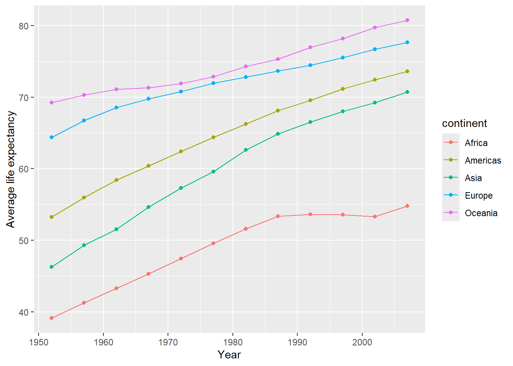
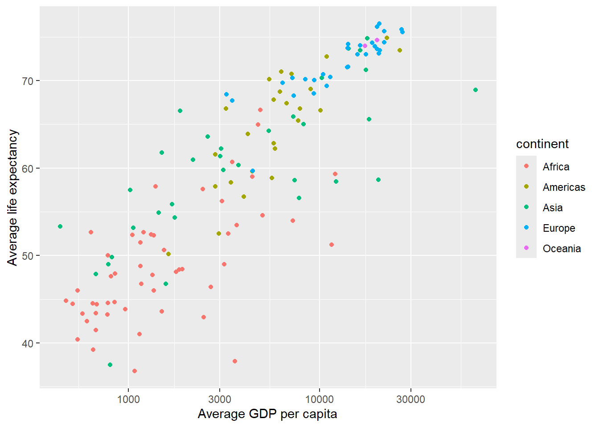

── Attaching core tidyverse packages ──────────────────────── tidyverse 2.0.0 ──
✔ dplyr 1.1.3 ✔ readr 2.1.4
✔ forcats 1.0.0 ✔ stringr 1.5.0
✔ ggplot2 3.4.3 ✔ tibble 3.2.1
✔ lubridate 1.9.3 ✔ tidyr 1.3.0
✔ purrr 1.0.2
── Conflicts ────────────────────────────────────────── tidyverse_conflicts() ──
✖ dplyr::filter() masks stats::filter()
✖ dplyr::lag() masks stats::lag()
ℹ Use the conflicted package (<http://conflicted.r-lib.org/>) to force all conflicts to become errors3: Exploring data
Gapminder data
In this lesson we will work with some of the data from the Gapminder project. This data are available via an R package, which you will need to install in R.
First, install the gapminder package. Then load the gapminder package and the tidyverse package as we will need its functionality to work with data.
The gapminder package provides you with a data table having the same name as the package (unfortunately).
Let’s inspect the contents of the data using the glimpse function from tidyverse:
glimpse(gapminder)Rows: 1,704
Columns: 6
$ country <fct> "Afghanistan", "Afghanistan", "Afghanistan", "Afghanistan", …
$ continent <fct> Asia, Asia, Asia, Asia, Asia, Asia, Asia, Asia, Asia, Asia, …
$ year <int> 1952, 1957, 1962, 1967, 1972, 1977, 1982, 1987, 1992, 1997, …
$ lifeExp <dbl> 28.801, 30.332, 31.997, 34.020, 36.088, 38.438, 39.854, 40.8…
$ pop <int> 8425333, 9240934, 10267083, 11537966, 13079460, 14880372, 12…
$ gdpPercap <dbl> 779.4453, 820.8530, 853.1007, 836.1971, 739.9811, 786.1134, …The output tells us that the Gapminder data contain 1704 rows and 6 columns.
An alternative to glimpse() is the str() function, showing the structure of the data
str(gapminder)tibble [1,704 × 6] (S3: tbl_df/tbl/data.frame)
$ country : Factor w/ 142 levels "Afghanistan",..: 1 1 1 1 1 1 1 1 1 1 ...
$ continent: Factor w/ 5 levels "Africa","Americas",..: 3 3 3 3 3 3 3 3 3 3 ...
$ year : int [1:1704] 1952 1957 1962 1967 1972 1977 1982 1987 1992 1997 ...
$ lifeExp : num [1:1704] 28.8 30.3 32 34 36.1 ...
$ pop : int [1:1704] 8425333 9240934 10267083 11537966 13079460 14880372 12881816 13867957 16317921 22227415 ...
$ gdpPercap: num [1:1704] 779 821 853 836 740 ...Handling data
If you have not already done so, install the tidyverse package now. Then, load it via:
Look at the data:
gapminder# A tibble: 1,704 × 6
country continent year lifeExp pop gdpPercap
<fct> <fct> <int> <dbl> <int> <dbl>
1 Afghanistan Asia 1952 28.8 8425333 779.
2 Afghanistan Asia 1957 30.3 9240934 821.
3 Afghanistan Asia 1962 32.0 10267083 853.
4 Afghanistan Asia 1967 34.0 11537966 836.
5 Afghanistan Asia 1972 36.1 13079460 740.
6 Afghanistan Asia 1977 38.4 14880372 786.
7 Afghanistan Asia 1982 39.9 12881816 978.
8 Afghanistan Asia 1987 40.8 13867957 852.
9 Afghanistan Asia 1992 41.7 16317921 649.
10 Afghanistan Asia 1997 41.8 22227415 635.
# ℹ 1,694 more rowsLook at the head (= top 6 rows) or tail (= last 6 rows) of the data
head(gapminder)# A tibble: 6 × 6
country continent year lifeExp pop gdpPercap
<fct> <fct> <int> <dbl> <int> <dbl>
1 Afghanistan Asia 1952 28.8 8425333 779.
2 Afghanistan Asia 1957 30.3 9240934 821.
3 Afghanistan Asia 1962 32.0 10267083 853.
4 Afghanistan Asia 1967 34.0 11537966 836.
5 Afghanistan Asia 1972 36.1 13079460 740.
6 Afghanistan Asia 1977 38.4 14880372 786.tail(gapminder)# A tibble: 6 × 6
country continent year lifeExp pop gdpPercap
<fct> <fct> <int> <dbl> <int> <dbl>
1 Zimbabwe Africa 1982 60.4 7636524 789.
2 Zimbabwe Africa 1987 62.4 9216418 706.
3 Zimbabwe Africa 1992 60.4 10704340 693.
4 Zimbabwe Africa 1997 46.8 11404948 792.
5 Zimbabwe Africa 2002 40.0 11926563 672.
6 Zimbabwe Africa 2007 43.5 12311143 470.Inspect the variable names, the number of columns, the length of the data (= ncol), the dimension, and the number of rows:
names(gapminder)[1] "country" "continent" "year" "lifeExp" "pop" "gdpPercap"ncol(gapminder)[1] 6length(gapminder)[1] 6dim(gapminder)[1] 1704 6nrow(gapminder)[1] 1704You can get a quick statistical description of each variable with
summary(gapminder) country continent year lifeExp
Afghanistan: 12 Africa :624 Min. :1952 Min. :23.60
Albania : 12 Americas:300 1st Qu.:1966 1st Qu.:48.20
Algeria : 12 Asia :396 Median :1980 Median :60.71
Angola : 12 Europe :360 Mean :1980 Mean :59.47
Argentina : 12 Oceania : 24 3rd Qu.:1993 3rd Qu.:70.85
Australia : 12 Max. :2007 Max. :82.60
(Other) :1632
pop gdpPercap
Min. :6.001e+04 Min. : 241.2
1st Qu.:2.794e+06 1st Qu.: 1202.1
Median :7.024e+06 Median : 3531.8
Mean :2.960e+07 Mean : 7215.3
3rd Qu.:1.959e+07 3rd Qu.: 9325.5
Max. :1.319e+09 Max. :113523.1
Look at some variables individually
Let’s start by looking at the year variable. Clearly, we are not running the following code otherwise we will get 1704 values printed out and it will be impossible to make any sense of that!
# Don't run this, or you will get 1704 values printed!
gapminder$yearInstead we will use head() to see the first few values:
head(gapminder$year)[1] 1952 1957 1962 1967 1972 1977If you wish to see more entries,
head(gapminder$year, n = 25) [1] 1952 1957 1962 1967 1972 1977 1982 1987 1992 1997 2002 2007 1952 1957 1962
[16] 1967 1972 1977 1982 1987 1992 1997 2002 2007 1952tail(gapminder$year, n = 25) [1] 2007 1952 1957 1962 1967 1972 1977 1982 1987 1992 1997 2002 2007 1952 1957
[16] 1962 1967 1972 1977 1982 1987 1992 1997 2002 2007Year is a numeric vector with entries being whole numbers (no decimals), in R these are also called integers.
class(gapminder$year)[1] "integer"We can get a quick summary of the data with the summary() function:
summary(gapminder$year) Min. 1st Qu. Median Mean 3rd Qu. Max.
1952 1966 1980 1980 1993 2007 Next, we can compute how many times each year appears in the data. This is also called a frequency table, as it shows the absolute frequency (or count) of how many times each year is present in the data:
table(gapminder$year)
1952 1957 1962 1967 1972 1977 1982 1987 1992 1997 2002 2007
142 142 142 142 142 142 142 142 142 142 142 142 Let’s now focus on the continent variable:
class(gapminder$continent)[1] "factor"head(gapminder$continent)[1] Asia Asia Asia Asia Asia Asia
Levels: Africa Americas Asia Europe OceaniaWe can see that continent is a factor object. The distinct categories it can take (= levels) and the number of levels are:
levels(gapminder$continent)[1] "Africa" "Americas" "Asia" "Europe" "Oceania" nlevels(gapminder$continent)[1] 5Performing a summary() on an object of class factor will perform a frequency table
summary(gapminder$continent) Africa Americas Asia Europe Oceania
624 300 396 360 24 That is, the same as
table(gapminder$continent)
Africa Americas Asia Europe Oceania
624 300 396 360 24 For small data tables, you can look at the data directly by typing
View(gapminder)Plotting
We can create a barplot showing how many times each continent appears in the data

Let’s focus on Europe:
# A tibble: 6 × 6
country continent year lifeExp pop gdpPercap
<fct> <fct> <int> <dbl> <int> <dbl>
1 Albania Europe 1952 55.2 1282697 1601.
2 Albania Europe 1957 59.3 1476505 1942.
3 Albania Europe 1962 64.8 1728137 2313.
4 Albania Europe 1967 66.2 1984060 2760.
5 Albania Europe 1972 67.7 2263554 3313.
6 Albania Europe 1977 68.9 2509048 3533.Average life expectancy over european countries for each year:
gapminder_avg <- gapminder_eu %>%
group_by(year) %>%
summarise(mean_life_exp = mean(lifeExp))
gapminder_avg# A tibble: 12 × 2
year mean_life_exp
<int> <dbl>
1 1952 64.4
2 1957 66.7
3 1962 68.5
4 1967 69.7
5 1972 70.8
6 1977 71.9
7 1982 72.8
8 1987 73.6
9 1992 74.4
10 1997 75.5
11 2002 76.7
12 2007 77.6Let’s show it as a plot
ggplot(data = gapminder_avg, aes(x = year, y = mean_life_exp)) +
geom_point() +
geom_line() +
labs(x = 'Year', y = 'Life expectancy (EU average)')What if we wanted to compare these curves across different continents?
gapminder_cont <- gapminder %>%
group_by(continent, year) %>%
summarise(mean_life_exp = mean(lifeExp))`summarise()` has grouped output by 'continent'. You can override using the
`.groups` argument.gapminder_cont# A tibble: 60 × 3
# Groups: continent [5]
continent year mean_life_exp
<fct> <int> <dbl>
1 Africa 1952 39.1
2 Africa 1957 41.3
3 Africa 1962 43.3
4 Africa 1967 45.3
5 Africa 1972 47.5
6 Africa 1977 49.6
7 Africa 1982 51.6
8 Africa 1987 53.3
9 Africa 1992 53.6
10 Africa 1997 53.6
# ℹ 50 more rowsggplot(data = gapminder_cont,
aes(x = year, y = mean_life_exp, color = continent)) +
geom_point() +
geom_line() +
labs(x = 'Year', y = 'Average life expectancy')
Wow! this plot is definitely much more informative than all that huge table of numbers you get from View(gapminder).
From the plot we can see the increasing trend over time of average life expectancy in each continent, and we see that Oceania consistently had the highest average life expectancy than any other country, while Africa had the lowest.
Group the Gapminder data by continent and country, and compute for each the average (over the different years) life expectancy and average GDP per capita.
Create a plot where each country is shown as a point, the x-axis has the average GDP per capita, the y-axis the average life expectancy, and the points are coloured by continent.
gapminder_le_gdp <- gapminder %>%
group_by(continent, country) %>%
summarise(mean_le = mean(lifeExp),
mean_gdp = mean(gdpPercap))`summarise()` has grouped output by 'continent'. You can override using the
`.groups` argument.gapminder_le_gdp# A tibble: 142 × 4
# Groups: continent [5]
continent country mean_le mean_gdp
<fct> <fct> <dbl> <dbl>
1 Africa Algeria 59.0 4426.
2 Africa Angola 37.9 3607.
3 Africa Benin 48.8 1155.
4 Africa Botswana 54.6 5032.
5 Africa Burkina Faso 44.7 844.
6 Africa Burundi 44.8 472.
7 Africa Cameroon 48.1 1775.
8 Africa Central African Republic 43.9 959.
9 Africa Chad 46.8 1165.
10 Africa Comoros 52.4 1314.
# ℹ 132 more rowsggplot(data = gapminder_le_gdp,
aes(x = mean_gdp, y = mean_le, color = continent)) +
geom_point() +
labs(x = 'Average GDP per capita', y = 'Average life expectancy')To make it easier to read, we can change the x-axis to increase in powers of 10.
ggplot(data = gapminder_le_gdp,
aes(x = mean_gdp, y = mean_le, color = continent)) +
geom_point() +
scale_x_log10() +
labs(x = 'Average GDP per capita', y = 'Average life expectancy')
Create a new column called pop_m, storing the population in millions.
Store the result in a new tibble called gapminder_new.
# A tibble: 1,704 × 7
country continent year lifeExp pop gdpPercap pop_m
<fct> <fct> <int> <dbl> <int> <dbl> <dbl>
1 Afghanistan Asia 1952 28.8 8425333 779. 8.43
2 Afghanistan Asia 1957 30.3 9240934 821. 9.24
3 Afghanistan Asia 1962 32.0 10267083 853. 10.3
4 Afghanistan Asia 1967 34.0 11537966 836. 11.5
5 Afghanistan Asia 1972 36.1 13079460 740. 13.1
6 Afghanistan Asia 1977 38.4 14880372 786. 14.9
7 Afghanistan Asia 1982 39.9 12881816 978. 12.9
8 Afghanistan Asia 1987 40.8 13867957 852. 13.9
9 Afghanistan Asia 1992 41.7 16317921 649. 16.3
10 Afghanistan Asia 1997 41.8 22227415 635. 22.2
# ℹ 1,694 more rowsConsider now only the countries in the Americas. Plot the average GDP per capita as a function of year.
gapminder_am <- gapminder %>%
filter(continent == 'Americas') %>%
group_by(year) %>%
summarise(mean_gdp = mean(gdpPercap))
gapminder_am# A tibble: 12 × 2
year mean_gdp
<int> <dbl>
1 1952 4079.
2 1957 4616.
3 1962 4902.
4 1967 5668.
5 1972 6491.
6 1977 7352.
7 1982 7507.
8 1987 7793.
9 1992 8045.
10 1997 8889.
11 2002 9288.
12 2007 11003.ggplot(data = gapminder_am,
aes(x = year, y = mean_gdp)) +
geom_point() +
geom_line()